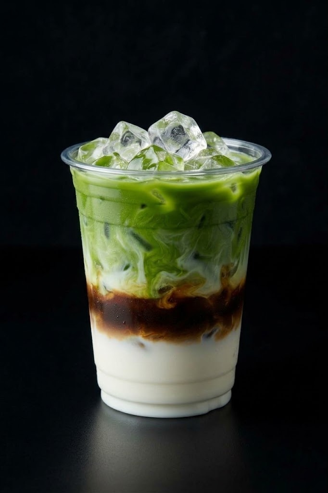

A LITTLE MOREjoy, please.K.
A CUP WITH A POINT OF VIEW
Good things take
a little care.
We started KAPE with one simple thought: your everyday coffee can feel like something special. So we find the good beans, whisk the good matcha, and make every cup like it has your name on it.
Nothing fussy. Nothing rushed. Just really good drinks and a place that feels like yours.
Meet your next favourite ↗Made with ♥ and a little extra foam.